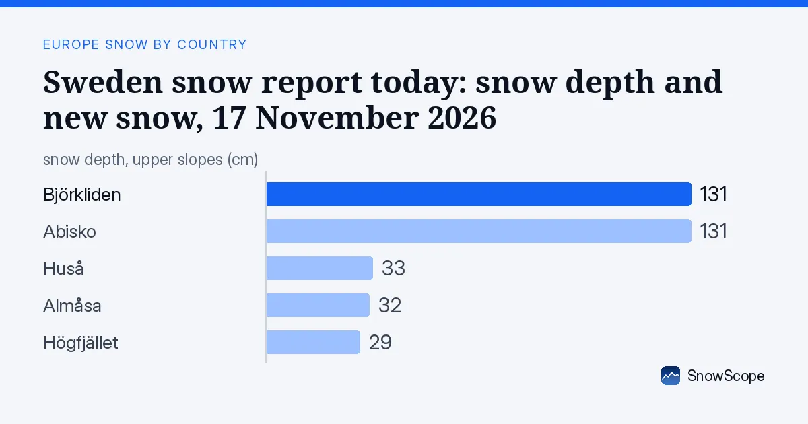

59 Swedish ski resorts now have snow cover across their terrain
59 of Sweden's 75 ski resorts have snow on their slopes today. The northern resorts are richest: Björkliden and Abisko both hold 131 cm measured at the base station, and the high peaks carry much deeper snow.
See the live snow forecast for Björkliden in the SnowScope appSnow depth, powder alerts and the 3D map, free.
59 resorts ready
Three weeks ago, only scattered patches of snow existed across Sweden's ski terrain. Today, 59 resorts have measurable cover. The white share has grown from almost nothing to 79% of the mapped area. This rapid change happened because the first real snow events of the season arrived in the second half of November.
The northern resorts lead. Björkliden holds 131 cm at its base station (933 m), and Abisko matches it at 902 m elevation. Both received 4 cm of fresh snow in the past 72 hours. Further south, the picture thins: Huså has 33 cm, Almåsa 32 cm, and Högfjället 29 cm. At lower elevations and in the south, snow is still shallow and patchy, with rocks and vegetation breaking through.
What matters is where you are. Go high, go north. Stay low or south, and you are still on autumn terrain.
| Resort | Snow depth | New snow, 72 h | Coming, next days | Top |
|---|---|---|---|---|
| Björkliden | 131 cm | 4 cm | 11 cm | 933 m |
| Abisko | 131 cm | 4 cm | 10 cm | 902 m |
| Huså | 33 cm | 3 cm | 5 cm | 677 m |
| Almåsa | 32 cm | 1 cm | 6 cm | 702 m |
| Högfjället | 29 cm | 1 cm | 9 cm | 886 m |

Where the snow sits deepest
Height rules snow depth in mountains. Below 500 m, only 72% of the terrain is covered and the mean depth is just 8 cm. Jump to 500-1000 m and cover becomes complete; depth averages 14 cm. Above 1000 m the story changes. Between 1000 and 1500 m, SnowScope shows a mean of 42 cm and full cover. Above 1500 m, depth rises to 67 cm on average across complete cover.
The snow line sits at about 100 m elevation. Below that, autumn still wins. This is early season snow, thin and patchy in the valleys. It is worth watching the forecast before heading to low-elevation resorts—a warm spell can undo weeks of work in days.

The Hemavan fjells are winning
Three areas have gathered the most fresh snow in the past 72 hours. The Hemavan fjells in the northwest received 15 cm. The Lapland fjells around Björkliden and Abisko added 11 cm. The Jämtland mountains in central Sweden picked up 9 cm. These zones sit where storm tracks have been shunting cold air and moisture off the Atlantic.
About 30,960 km2 of terrain—roughly one tenth of the mapped area—has gained at least 5 cm in three days. That is enough to stabilise the base and bury low obstacles. Tomorrow, 11 November, is forecast to be the snowiest day of the week.
What is coming
The next three days could add up to 15 cm in the best zones; over seven days, up to 17 cm. Tomorrow is the peak day. This will push the depth totals higher and extend snow cover into the mid-elevation resorts that today are still marginal. The northern peaks will continue to accumulate.
By November 20, the most exposed lower sites may still be thin. The higher mountains and the north will be consolidating their base for winter.
Yesterday to today
Snow cover grew by 1550 km2 in one day. Björkliden nudged ahead of Abisko for deepest pack at the resort base station, though both sit at the same 131 cm. This is not a big shift—the northern resorts are running nearly identical snow profiles. The real growth is in area. A week ago, only 119,070 km2 of Sweden's ski terrain carried snow. Today, 258,540 km2 is white. That is a gain of 139,470 km2 in seven days—a transformation driven by the first proper winter storm sequence.
Early-season caution
The snow is fresh. Where depth is under 30 cm, rocks and stumps are still a risk; ice patches lurk beneath the new powder. The base layer under tomorrow's fresh fall may settle unevenly. Northern resorts with 100+ cm have safety margin. The southern and lower-elevation sites, with 30 cm or less, are more fragile.
Check the official avalanche bulletin for each zone before leaving the piste. Use SnowScope to track when your chosen resorts cross the depth threshold that feels safe for your style of skiing.
Tips for skiers
- Head north or above 1000 m for reliable snow. Björkliden, Abisko, and the Hemavan fjells carry 100+ cm and are safest now.
- If you choose a mid-elevation resort (500-1000 m) or one further south, wait for tomorrow's new snow to settle—at least one day—before skiing off-piste.
- Watch for rocks and ice at resorts with less than 30 cm depth. Piste skiing is usually safe; backcountry and steep sides are not yet.
- By November 20, lower resorts may have enough new cover to feel more stable; the mountains will be richer still.
- Check the official avalanche forecast for your zone before each outing, especially on steep slopes and in gullies.
About these numbers
Resort snow depths are the deepest snow on the resort's upper slopes on the date shown; they are estimates for an area, not a measurement at one point. Forecasts can change. Always read the official avalanche bulletin before going off-piste.
Cite this report
For research, teaching or the press: the numbers and charts are free to reuse under CC BY 4.0 with this citation.
SnowScope (2026), 59 Swedish ski resorts now have snow cover across their terrain, https://snowscope.app/blog/en/2026/11/sweden-snow-report-17-november-2026.html, accessed 2026-11-17
SnowScope (Atlas Labs). (2026, November 17). 59 Swedish ski resorts now have snow cover across their terrain. SnowScope snow reports. https://snowscope.app/blog/en/2026/11/sweden-snow-report-17-november-2026.html
BibTeX
@misc{snowscope2026swedensnowreport17novemb,
author = {{SnowScope (Atlas Labs)}},
title = {59 Swedish ski resorts now have snow cover across their terrain},
year = {2026},
month = nov,
howpublished = {\url{https://snowscope.app/blog/en/2026/11/sweden-snow-report-17-november-2026.html}},
note = {Published 2026-11-17 12:53 UTC; accessed 2026-11-17}
}· CC BY 4.0 · Methods, data and tools →
Björkliden: snow and temperature by height, this winter vs last (tools) →
Follow Björkliden
Free: a message when fresh snow is coming, and the forecast every morning.
More snow reports

A slope map of Les Grands Montets and seven other ski areas shows how much of the ground is steeper than 30°, 35° and 40°, and why that line matters for avalanches.

Tornik on Zlatibor had up to 39 cm on its upper slopes on 15 November 2026; by Wednesday it had melted. Kopaonik barely turned white. The week day by day and what comes next.

Savin Kuk above Žabljak picked up 22 cm of snow from 13 to 19 November and still has 6 cm today. Kolašin 1450 and 1600 are bare. The week day by day, and the next chances.